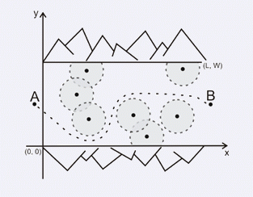

战犯们企图逃离监狱，他们详细地计划了如何逃出监狱本身，逃出监狱之后他们希望在附近的一个村子里找到掩护。村子（下图中的B）和监狱（图中的A）中间有一个峡谷，这个峡谷也是有士兵守卫的。守卫峡谷的士兵们坐在岗哨上很少走动，每个士兵的观察范围是100米。士兵所处位置决定了战犯们能否安全通过峡谷，安全通过的条件就是在任何时刻战犯们距离最近的士兵大于100米。
给定峡谷的长、宽和每个士兵在峡谷中的坐标，假定士兵的位置一直保持不变，请你写一个程序计算战犯们能否不被士兵发现，顺利通过峡谷。如果不能，那么战犯们最少需要消灭几个士兵才能安全通过峡谷（无论士兵是否被另一个士兵看到，他都可以被消灭）。
